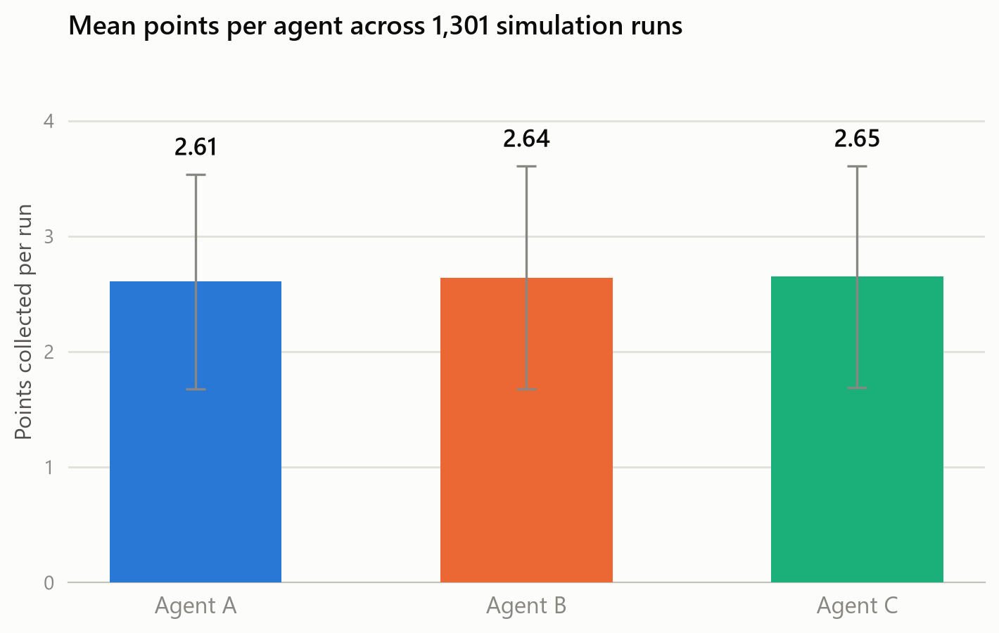
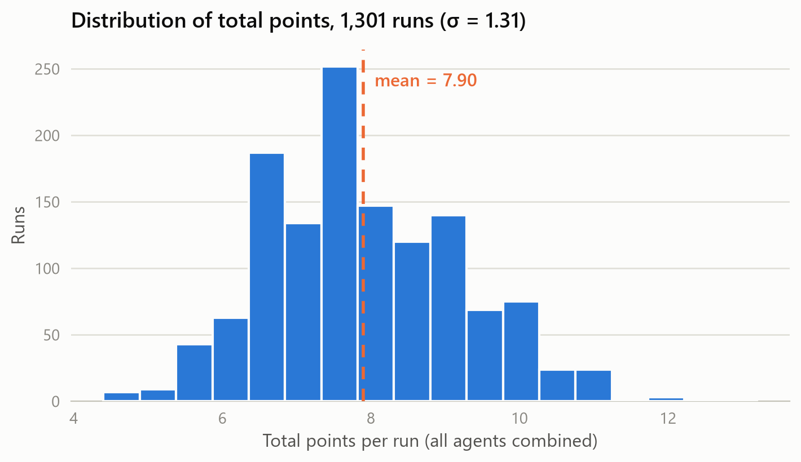

Three agents share a 10×10 grid littered with garbage of varying reward, and have to decide who collects what without a central planner dictating the answer. Built on Jason/AgentSpeak, task allocation runs as a contract-net negotiation over each agent's A* path cost, re-planned on every pickup.
Split a shared workload across independent agents that don't take orders from anyone: a set of garbage items, each worth a different reward, scattered across a grid, and a handful of agents that each have to figure out which item is worth going after. There's no central scheduler assigning tasks by fiat, agents need a way to agree on who takes what so they don't collide on the same target or leave items uncollected, and that allocation has to keep working as items are collected and new ones respawn, not just once at the start.
The simulation is implemented as a Jason Environment extending its GridWorldModel, on a 10×10 grid with walls that block movement. Three agents (A, B, C, rendered red/cyan/magenta) share the space, and garbage items spawn at random cells with one of four reward values (0.2, 0.4, 0.6, 0.8). Collecting an item respawns it elsewhere at a fresh reward, so there's always a live task queue rather than a fixed list that runs out and every move costs a small penalty (0.01 points), so idle wandering is never free.
next(slot) movement actions, defined in AgentSpeak plans.Env3), which brokers who goes after which item and computes the route.Instead of a fixed assignment, each garbage item is auctioned off: every agent's bid is its utility for that item, the item's reward minus the cost of the A* path to reach it and the item goes to whichever agent values it most. That's a first pass over every open item. A second pass then guarantees no agent is left idle: any agent that didn't win an item in the first round is handed the nearest reachable one, even if it isn't the globally optimal pick, so task coverage never depends on the auction converging cleanly.
Each bid's path cost, and each agent's actual route, comes from an A* search over the grid that respects walls and obstacles. Paths aren't computed once and forgotten: whenever an item is collected (its target disappears and a new one spawns) or an agent gets reassigned, every affected route is recalculated, so agents are always chasing a currently-valid target instead of a stale plan.
When two agents' bids would clash over the same item, priority went to the agent with the greater income, a simple, cheap-to-compute tie-breaker, but one that risked letting early leaders keep winning and starving a lower-scoring agent of tasks. That risk is exactly what the results below test for.
A small 24-run pilot batch logged early on shows a real imbalance: Agent A and B pulled ahead while Agent C collected less than half as much on average, the fairness risk the income-priority rule invites. The fuller simulation log, 1,301 runs committed alongside the code, tells a different story once the utility function is doing the weighing (reward minus path cost, not reward alone): all three agents converge to essentially the same average.
| Run set | Agent A | Agent B | Agent C | Total (mean) |
|---|---|---|---|---|
| Pilot batch (24 runs) | 2.43 ± 0.95 | 2.07 ± 0.91 | 1.12 ± 0.77 | 5.61 |
| Full log (1,301 runs) | 2.61 ± 0.93 | 2.64 ± 0.97 | 2.65 ± 0.96 | 7.90 |


The income-priority tie-break is the piece I'd revisit first: it happens to average out over a long run, but nothing about it guarantees fairness on any single run, it's an emergent property of the utility function, not a designed one. A more deliberate version would resolve conflicts by comparing proximity directly, or track each agent's running total and bias contested items toward whoever is behind, rather than leaning entirely on reward-minus-cost to sort itself out.